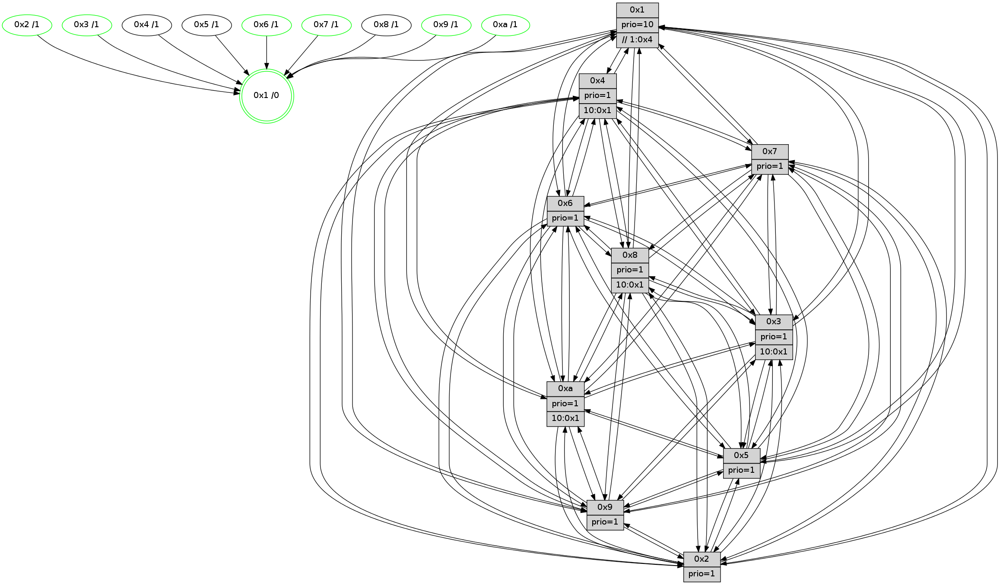

>> << IDX [start] -100 -25 -5 +0 +5 +25 +100 [1015.54128313]
 Previous packets
----------------------------------------------------------------------
1010.024364 beacon01(faad) #0 coord=01,02,03,04,05,06,07,0a,09,08 cycle=688.0ms assoc
-- color-indic=1 64 0e e8
1010.034346 beacon02(faad) #0 coord=01,02,03,04,05,06,07,0a,09,08 cycle=688.0ms assoc 64 9d d9
1010.044346 beacon03(faad) #0 coord=01,02,03,04,05,06,07,0a,09,08 cycle=688.0ms assoc 64 e7 94
1010.054348 beacon04(faad) #0 coord=01,02,03,04,05,06,07,0a,09,08 cycle=688.0ms assoc 64 90 7e
1010.064346 beacon05(faad) #0 coord=01,02,03,04,05,06,07,0a,09,08 cycle=688.0ms assoc 64 ea 33
1010.074347 beacon06(faad) #0 coord=01,02,03,04,05,06,07,0a,09,08 cycle=688.0ms assoc 64 64 e4
1010.084347 beacon07(faad) #0 coord=01,02,03,04,05,06,07,0a,09,08 cycle=688.0ms assoc 64 1e a9
1010.094351 beacon0a(faad) #0 coord=01,02,03,04,05,06,07,0a,09,08 cycle=688.0ms assoc 64 6f a2
1010.104354 beacon09(faad) #0 coord=01,02,03,04,05,06,07,0a,09,08 cycle=688.0ms assoc 64 e1 75
1010.114352 beacon08(faad) #0 coord=01,02,03,04,05,06,07,0a,09,08 cycle=688.0ms assoc 64 9b 38
1010.125579 [Hello(8): seq=589 sym=5,2,3,4,9,6,7,10,1 sysInfo=hasWarning stat=5:14,12,7,14/2:13,2,1,6/3:14,10,2,12/4:9,4,14,8/9:7,9,8,2/6:0,0,1,11/7:4,15,6,2/10:1,2,9,2/1:7,13,1,0]
1010.129297 [Hello(9): seq=589 sym=2,5,3,4,7,6,8,10,1 sysInfo=hasWarning stat=2:15,8,1,4/5:5,12,14,4/3:0,3,15,12/4:6,3,11,7/7:7,10,0,10/6:2,14,7,9/8:3,9,1,3/10:11,4,3,2/1:10,9,6,1]
1010.132202 [STC(1) #0.141 tree-change,inconsistent-stability,stable,to-color d=0]
1010.133708 [Color(9) seq=262 @0:0 prio=1]
1010.135651 [Hello(7): seq=645 sym=2,3,5,6,4,8,9,10,1 sysInfo=hasWarning stat=2:15,0,10,14/3:12,6,4,12/5:12,4,8,0/6:12,7,5,7/4:15,13,1,1/8:8,7,2,1/9:3,4,6,0/10:6,13,10,3/1:14,2,6,0]
1010.138325 [Color(2) seq=261 @0:0 prio=1]
1010.140717 [Color(7) seq=215 @0:0 prio=1]
1010.145164 [Hello(4): seq=645 sym=5,7,6,2,3,9,8,10,1 sysInfo= stat=5:9,10,0,13/7:11,5,2,9/6:5,2,12,10/2:10,6,11,11/3:15,0,12,8/9:9,10,7,9/8:1,1,4,3/10:6,9,8,11/1:6,11,5,1]
1010.147655 [Color(1) seq=326 @0:0 prio=10 >>1.@4,1.@6,1.@7]
1010.150423 [Hello(10): seq=578 sym=6,2,3,8,7,5,9,4,1 sysInfo=hasWarning stat=6:0,0,4,4/2:3,0,14,6/3:11,8,10,8/8:0,9,5,2/7:7,1,5,3/5:12,5,6,13/9:9,8,6,1/4:0,6,7,7/1:3,11,10,1]
----------------------------------------------------------------------
1010.812495 beacon01(faad) #0 coord=01,02,03,04,05,06,07,0a,09,08 cycle=688.0ms assoc
-- color-indic=1 64 3a f0
1010.822477 beacon02(faad) #0 coord=01,02,03,04,05,06,07,0a,09,08 cycle=688.0ms assoc 64 a9 c1
1010.832477 beacon03(faad) #0 coord=01,02,03,04,05,06,07,0a,09,08 cycle=688.0ms assoc 64 d3 8c
1010.842478 beacon04(faad) #0 coord=01,02,03,04,05,06,07,0a,09,08 cycle=688.0ms assoc 64 a4 66
1010.852480 beacon05(faad) #0 coord=01,02,03,04,05,06,07,0a,09,08 cycle=688.0ms assoc 64 de 2b
1010.862479 beacon06(faad) #0 coord=01,02,03,04,05,06,07,0a,09,08 cycle=688.0ms assoc 64 50 fc
1010.872479 beacon07(faad) #0 coord=01,02,03,04,05,06,07,0a,09,08 cycle=688.0ms assoc 64 2a b1
1010.882483 beacon0a(faad) #0 coord=01,02,03,04,05,06,07,0a,09,08 cycle=688.0ms assoc 64 5b ba
1010.902483 beacon08(faad) #0 coord=01,02,03,04,05,06,07,0a,09,08 cycle=688.0ms assoc 64 af 20
1010.913427 [Hello(1): seq=555 sym=4,2,9,5,10,3,8,6,7 sysInfo=coloring-mode-on,ColoringModeRequestCalled stat=4:3,8,4,2/2:5,3,2,13/9:2,13,2,6/5:9,9,10,6/10:7,12,3,4/3:10,13,4,3/8:10,13,2,1/6:8,13,1,11/7:2,0,3,12]
1010.916739 [STC(8)->1 #0.141 to-color d=1]
1010.918064 [Hello(5): seq=646 sym=7,6,4,3,1,9,8,10,2 sysInfo=hasWarning stat=7:3,0,8,11/6:6,15,7,0/4:0,3,2,8/3:4,13,12,10/1:2,3,8,1/9:12,3,4,6/8:2,2,0,0/10:10,2,12,6/2:10,3,3,2]
1010.920520 [Color(4) seq=238 @0:0 prio=1 >10.@1,1.@6,1.@7,1.@8]
1010.922173 [Color(10) seq=250 @0:0 prio=1 >10.@1,1.@4,1.@6,1.@7]
1010.923899 [Hello(2): seq=642 sym=4,5,7,6,3,9,8,10,1 sysInfo=hasWarning stat=4:12,2,7,6/5:4,13,10,2/7:13,2,7,10/6:4,5,13,9/3:1,8,11,5/9:7,13,1,5/8:14,14,9,9/10:2,6,0,10/1:13,7,5,1]
1010.926688 [STC(5)->1 #0.141 to-color d=1]
1010.930970 [Hello(6): seq=646 sym=2,3,5,4,7,9,8,10,1 sysInfo= stat=2:15,3,2,2/3:2,12,3,10/5:4,1,3,14/4:3,0,9,2/7:8,11,2,8/9:7,14,4,6/8:3,13,14,3/10:4,8,7,12/1:10,14,5,1]
1010.933762 [Hello(3): seq=646 sym=1,7,6,2,4,8,9,10,5 sysInfo= stat=1:7,6,0,0/7:13,13,11,9/6:2,12,12,3/2:8,5,15,12/4:4,7,0,7/8:15,2,9,2/9:14,5,0,12/10:12,13,13,3/5:10,3,9,12]
1010.936903 [STC(3)->1 #0.141 tree-change,inconsistent-stability,stable,to-color d=1]
1010.938530 [Color(3) seq=275 @0:0 prio=1 >10.@1,1.@4,1.@6,1.@7]
1010.941726 [STC(6)->1 #0.141 tree-change,inconsistent-stability,stable,to-color d=1]
1010.943687 [Color(6) seq=278 @0:0 prio=1]
----------------------------------------------------------------------
1011.600627 beacon01(faad) #0 coord=01,02,03,04,05,06,07,0a,09,08 cycle=688.0ms assoc
-- color-indic=1 64 86 f5
1011.610609 beacon02(faad) #0 coord=01,02,03,04,05,06,07,0a,09,08 cycle=688.0ms assoc 64 15 c4
1011.620608 beacon03(faad) #0 coord=01,02,03,04,05,06,07,0a,09,08 cycle=688.0ms assoc 64 6f 89
1011.630608 beacon04(faad) #0 coord=01,02,03,04,05,06,07,0a,09,08 cycle=688.0ms assoc 64 18 63
1011.640609 beacon05(faad) #0 coord=01,02,03,04,05,06,07,0a,09,08 cycle=688.0ms assoc 64 62 2e
1011.650609 beacon06(faad) #0 coord=01,02,03,04,05,06,07,0a,09,08 cycle=688.0ms assoc 64 ec f9
1011.660610 beacon07(faad) #0 coord=01,02,03,04,05,06,07,0a,09,08 cycle=688.0ms assoc 64 96 b4
1011.670615 beacon0a(faad) #0 coord=01,02,03,04,05,06,07,0a,09,08 cycle=688.0ms assoc 64 e7 bf
1011.680616 beacon09(faad) #0 coord=01,02,03,04,05,06,07,0a,09,08 cycle=688.0ms assoc 64 69 68
1011.690616 beacon08(faad) #0 coord=01,02,03,04,05,06,07,0a,09,08 cycle=688.0ms assoc 64 13 25
1011.701837 [Hello(10): seq=579 sym=6,2,3,8,7,5,9,4,1 sysInfo=hasWarning stat=6:1,1,5,4/2:4,0,14,6/3:12,9,11,8/8:0,9,5,2/7:7,1,5,3/5:12,5,7,13/9:9,8,6,1/4:0,6,7,7/1:4,11,10,1]
1011.705306 [Color(2) seq=262 @0:0 prio=1]
1011.707343 [Hello(8): seq=590 sym=5,2,3,4,9,6,7,10,1 sysInfo=hasWarning stat=5:15,12,8,14/2:14,3,1,6/3:15,11,3,12/4:10,5,14,8/9:8,10,8,2/6:1,1,2,11/7:5,0,6,2/10:2,3,9,2/1:7,14,2,0]
1011.710609 [Hello(7): seq=646 sym=2,3,5,6,4,8,9,10,1 sysInfo=hasWarning stat=2:0,0,10,14/3:13,7,5,12/5:13,4,9,0/6:13,8,6,7/4:0,14,1,1/8:9,7,3,1/9:3,4,6,0/10:7,14,10,3/1:15,3,6,0]
1011.713419 [Color(7) seq=216 @0:0 prio=1]
1011.714768 [Hello(9): seq=590 sym=2,5,3,4,7,6,8,10,1 sysInfo=hasWarning stat=2:0,9,1,4/5:6,12,15,4/3:1,4,0,12/4:7,4,11,7/7:8,11,0,10/6:3,15,8,9/8:4,9,2,3/10:12,5,3,2/1:11,10,6,1]
1011.717223 [Color(1) seq=327 @0:0 prio=10 >>1.@4,1.@6,1.@7]
1011.718993 [Color(9) seq=263 @0:0 prio=1]
1011.721941 [Hello(4): seq=646 sym=5,7,6,2,3,9,8,10,1 sysInfo= stat=5:9,10,1,13/7:11,5,2,9/6:6,3,13,10/2:11,6,11,11/3:0,1,13,8/9:9,10,7,9/8:1,1,4,3/10:7,10,8,11/1:7,12,5,1]
1011.725061 [STC(4)->5-.->1 #0.141 to-color d=2]
----------------------------------------------------------------------
1012.388757 beacon01(faad) #0 coord=01,02,03,04,05,06,07,0a,09,08 cycle=688.0ms assoc
-- color-indic=1 64 42 fb
1012.398740 beacon02(faad) #0 coord=01,02,03,04,05,06,07,0a,09,08 cycle=688.0ms assoc 64 d1 ca
1012.408739 beacon03(faad) #0 coord=01,02,03,04,05,06,07,0a,09,08 cycle=688.0ms assoc 64 ab 87
1012.418740 beacon04(faad) #0 coord=01,02,03,04,05,06,07,0a,09,08 cycle=688.0ms assoc 64 dc 6d
1012.428739 beacon05(faad) #0 coord=01,02,03,04,05,06,07,0a,09,08 cycle=688.0ms assoc 64 a6 20
1012.438740 beacon06(faad) #0 coord=01,02,03,04,05,06,07,0a,09,08 cycle=688.0ms assoc 64 28 f7
1012.448741 beacon07(faad) #0 coord=01,02,03,04,05,06,07,0a,09,08 cycle=688.0ms assoc 64 52 ba
1012.458745 beacon0a(faad) #0 coord=01,02,03,04,05,06,07,0a,09,08 cycle=688.0ms assoc 64 23 b1
1012.468746 beacon09(faad) #0 coord=01,02,03,04,05,06,07,0a,09,08 cycle=688.0ms assoc 64 ad 66
1012.478746 beacon08(faad) #0 coord=01,02,03,04,05,06,07,0a,09,08 cycle=688.0ms assoc 64 d7 2b
1012.494227 [Color(10) seq=251 @0:0 prio=1 >10.@1,1.@4,1.@6,1.@7]
1012.497307 [Hello(1): seq=556 sym=4,2,9,5,10,3,8,6,7 sysInfo=coloring-mode-on,ColoringModeRequestCalled stat=4:4,9,5,2/2:6,3,2,13/9:2,14,2,6/5:10,9,11,6/10:8,13,3,4/3:11,14,5,3/8:10,13,3,1/6:9,14,2,11/7:2,0,3,12]
1012.503529 [Hello(3): seq=647 sym=1,7,6,2,4,8,9,10,5 sysInfo= stat=1:8,7,0,0/7:14,14,11,9/6:2,13,13,3/2:8,6,15,12/4:5,7,1,7/8:0,2,10,2/9:15,6,0,12/10:13,13,13,3/5:10,3,9,12]
1012.506937 [Hello(6): seq=647 sym=2,3,5,4,7,9,8,10,1 sysInfo= stat=2:15,4,2,2/3:2,12,3,10/5:4,1,3,14/4:4,0,10,2/7:9,12,2,8/9:8,15,4,6/8:4,13,15,3/10:5,8,7,12/1:11,15,5,1]
1012.510651 [Color(3) seq=276 @0:0 prio=1 >10.@1,1.@4,1.@6,1.@7]
1012.515312 [Color(6) seq=279 @0:0 prio=1]
----------------------------------------------------------------------
1013.176890 beacon01(faad) #0 coord=01,02,03,04,05,06,07,0a,09,08 cycle=688.0ms assoc
-- color-indic=1 64 fe fe
1013.186872 beacon02(faad) #0 coord=01,02,03,04,05,06,07,0a,09,08 cycle=688.0ms assoc 64 6d cf
1013.196872 beacon03(faad) #0 coord=01,02,03,04,05,06,07,0a,09,08 cycle=688.0ms assoc 64 17 82
1013.206873 beacon04(faad) #0 coord=01,02,03,04,05,06,07,0a,09,08 cycle=688.0ms assoc 64 60 68
1013.216874 beacon05(faad) #0 coord=01,02,03,04,05,06,07,0a,09,08 cycle=688.0ms assoc 64 1a 25
1013.226873 beacon06(faad) #0 coord=01,02,03,04,05,06,07,0a,09,08 cycle=688.0ms assoc 64 94 f2
1013.236873 beacon07(faad) #0 coord=01,02,03,04,05,06,07,0a,09,08 cycle=688.0ms assoc 64 ee bf
1013.246878 beacon0a(faad) #0 coord=01,02,03,04,05,06,07,0a,09,08 cycle=688.0ms assoc 64 9f b4
1013.266877 beacon08(faad) #0 coord=01,02,03,04,05,06,07,0a,09,08 cycle=688.0ms assoc 64 6b 2e
1013.278050 [Hello(8): seq=591 sym=5,2,3,4,9,6,7,10,1 sysInfo=hasWarning stat=5:15,12,8,14/2:14,3,1,6/3:0,12,3,12/4:11,5,15,8/9:9,11,8,2/6:2,2,2,11/7:6,1,6,2/10:2,4,9,2/1:8,15,2,0]
1013.281604 [Color(2) seq=263 @0:0 prio=1]
1013.283432 [Color(1) seq=328 @0:0 prio=10 >>1.@4,1.@6,1.@7]
1013.285159 [Hello(7): seq=647 sym=2,3,5,6,4,8,9,10,1 sysInfo=hasWarning stat=2:1,0,10,14/3:14,8,5,12/5:13,4,9,0/6:14,9,6,7/4:1,14,2,1/8:9,7,3,1/9:4,5,6,0/10:8,15,10,3/1:0,4,6,0]
1013.288945 [Color(7) seq=217 @0:0 prio=1]
1013.291829 [Hello(10): seq=580 sym=6,2,3,8,7,5,9,4,1 sysInfo=hasWarning stat=6:2,2,5,4/2:4,1,14,6/3:13,10,11,8/8:1,9,5,2/7:8,2,5,3/5:12,5,7,13/9:10,9,6,1/4:1,6,8,7/1:5,12,10,1]
1013.301228 [Hello(9): seq=591 sym=2,5,3,4,7,6,8,10,1 sysInfo=hasWarning stat=2:0,9,1,4/5:7,12,15,4/3:2,5,0,12/4:8,4,12,7/7:8,11,0,10/6:4,0,8,9/8:4,9,2,3/10:13,6,3,2/1:12,11,6,1]
1013.303903 [Hello(4): seq=647 sym=5,7,6,2,3,9,8,10,1 sysInfo= stat=5:9,10,1,13/7:11,5,2,9/6:7,4,13,10/2:11,6,11,11/3:1,2,13,8/9:9,10,7,9/8:1,1,4,3/10:7,11,8,11/1:8,12,5,1]
1013.308351 [Color(9) seq=264 @0:0 prio=1]
----------------------------------------------------------------------
1013.965021 beacon01(faad) #0 coord=01,02,03,04,05,06,07,0a,09,08 cycle=688.0ms assoc
-- color-indic=1 64 2a cb
1013.975003 beacon02(faad) #0 coord=01,02,03,04,05,06,07,0a,09,08 cycle=688.0ms assoc 64 b9 fa
1013.985005 beacon03(faad) #0 coord=01,02,03,04,05,06,07,0a,09,08 cycle=688.0ms assoc 64 c3 b7
1013.995005 beacon04(faad) #0 coord=01,02,03,04,05,06,07,0a,09,08 cycle=688.0ms assoc 64 b4 5d
1014.005004 beacon05(faad) #0 coord=01,02,03,04,05,06,07,0a,09,08 cycle=688.0ms assoc 64 ce 10
1014.015004 beacon06(faad) #0 coord=01,02,03,04,05,06,07,0a,09,08 cycle=688.0ms assoc 64 40 c7
1014.025006 beacon07(faad) #0 coord=01,02,03,04,05,06,07,0a,09,08 cycle=688.0ms assoc 64 3a 8a
1014.035008 beacon0a(faad) #0 coord=01,02,03,04,05,06,07,0a,09,08 cycle=688.0ms assoc 64 4b 81
1014.045010 beacon09(faad) #0 coord=01,02,03,04,05,06,07,0a,09,08 cycle=688.0ms assoc 64 c5 56
1014.055009 beacon08(faad) #0 coord=01,02,03,04,05,06,07,0a,09,08 cycle=688.0ms assoc 64 bf 1b
1014.066824 [Hello(5): seq=648 sym=7,6,4,3,1,9,8,10,2 sysInfo=hasWarning stat=7:5,2,8,11/6:8,1,8,0/4:2,4,3,8/3:6,15,13,10/1:4,5,8,1/9:14,5,4,6/8:4,2,0,0/10:12,3,12,6/2:10,5,3,2]
1014.069589 [Color(10) seq=252 @0:0 prio=1 >10.@1,1.@4,1.@6,1.@7]
1014.071337 [Hello(3): seq=648 sym=1,7,6,2,4,8,9,10,5 sysInfo= stat=1:8,8,0,0/7:15,15,11,9/6:2,14,13,3/2:9,7,15,12/4:6,7,1,7/8:1,2,10,2/9:0,7,0,12/10:14,13,13,3/5:10,3,9,12]
1014.074485 [Color(3) seq=277 @0:0 prio=1 >10.@1,1.@4,1.@6,1.@7]
1014.077031 [Hello(6): seq=648 sym=2,3,5,4,7,9,8,10,1 sysInfo= stat=2:15,5,2,2/3:2,12,3,10/5:4,1,3,14/4:5,0,10,2/7:10,13,2,8/9:9,0,4,6/8:5,13,15,3/10:6,8,7,12/1:11,0,5,1]
1014.081777 [Color(6) seq=280 @0:0 prio=1]
1014.083082 [Hello(2): seq=644 sym=4,5,7,6,3,9,8,10,1 sysInfo=hasWarning stat=4:14,2,8,6/5:4,13,11,2/7:15,4,7,10/6:6,7,14,9/3:3,10,12,5/9:9,15,1,5/8:0,14,9,9/10:4,7,0,10/1:14,9,5,1]
----------------------------------------------------------------------
1014.753151 beacon01(faad) #0 coord=01,02,03,04,05,06,07,0a,09,08 cycle=688.0ms assoc
-- color-indic=1 64 96 ce
1014.763134 beacon02(faad) #0 coord=01,02,03,04,05,06,07,0a,09,08 cycle=688.0ms assoc 64 05 ff
1014.773134 beacon03(faad) #0 coord=01,02,03,04,05,06,07,0a,09,08 cycle=688.0ms assoc 64 7f b2
1014.783136 beacon04(faad) #0 coord=01,02,03,04,05,06,07,0a,09,08 cycle=688.0ms assoc 64 08 58
1014.793133 beacon05(faad) #0 coord=01,02,03,04,05,06,07,0a,09,08 cycle=688.0ms assoc 64 72 15
1014.803135 beacon06(faad) #0 coord=01,02,03,04,05,06,07,0a,09,08 cycle=688.0ms assoc 64 fc c2
1014.813134 beacon07(faad) #0 coord=01,02,03,04,05,06,07,0a,09,08 cycle=688.0ms assoc 64 86 8f
1014.823140 beacon0a(faad) #0 coord=01,02,03,04,05,06,07,0a,09,08 cycle=688.0ms assoc 64 f7 84
1014.833139 beacon09(faad) #0 coord=01,02,03,04,05,06,07,0a,09,08 cycle=688.0ms assoc 64 79 53
1014.843139 beacon08(faad) #0 coord=01,02,03,04,05,06,07,0a,09,08 cycle=688.0ms assoc 64 03 1e
1014.854542 [Hello(4): seq=648 sym=5,7,6,2,3,9,8,10,1 sysInfo= stat=5:10,10,1,13/7:11,5,2,9/6:8,5,13,10/2:12,6,11,11/3:1,3,13,8/9:9,11,7,9/8:1,1,4,3/10:7,12,8,11/1:8,12,6,1]
1014.857703 [STC(4)->1 #0.142 to-color d=1]
1014.859012 [Hello(9): seq=592 sym=2,5,3,4,7,6,8,10,1 sysInfo=hasWarning stat=2:1,9,1,4/5:8,12,15,4/3:3,6,0,12/4:8,4,12,7/7:8,11,0,10/6:5,1,8,9/8:5,9,2,3/10:13,7,3,2/1:12,11,6,1]
1014.861729 [Hello(7): seq=648 sym=2,3,5,6,4,8,9,10,1 sysInfo=hasWarning stat=2:2,0,10,14/3:15,9,5,12/5:14,4,9,0/6:15,10,6,7/4:2,14,2,1/8:10,7,3,1/9:5,6,6,0/10:9,0,10,3/1:0,4,6,0]
1014.864442 [Color(2) seq=264 @0:0 prio=1]
1014.865816 [Color(9) seq=265 @0:0 prio=1]
1014.867723 [Color(7) seq=218 @0:0 prio=1]
1014.870205 [Hello(8): seq=592 sym=5,2,3,4,9,6,7,10,1 sysInfo=hasWarning stat=5:0,12,8,14/2:15,4,1,6/3:0,13,3,12/4:12,5,15,8/9:10,12,8,2/6:3,3,2,11/7:7,2,6,2/10:3,5,9,2/1:8,0,3,0]
1014.874324 [STC(8)->1 #0.142 tree-change,inconsistent-stability,to-color d=1]
1014.875899 [Hello(10): seq=581 sym=6,2,3,8,7,5,9,4,1 sysInfo=hasWarning stat=6:3,3,5,4/2:5,1,14,6/3:14,11,11,8/8:1,9,5,2/7:8,2,5,3/5:12,5,7,13/9:11,10,6,1/4:2,6,8,7/1:6,12,10,1]
1014.887300 [Color(1) seq=329 @0:0 prio=10 >>1.@4,1.@6,1.@7]